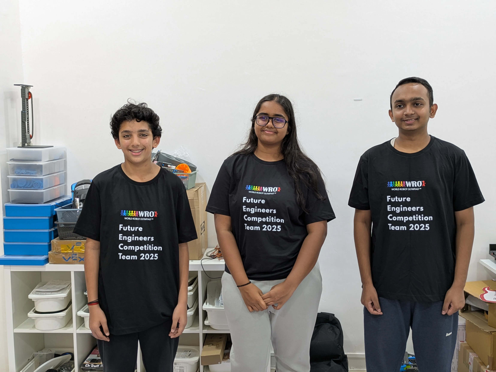
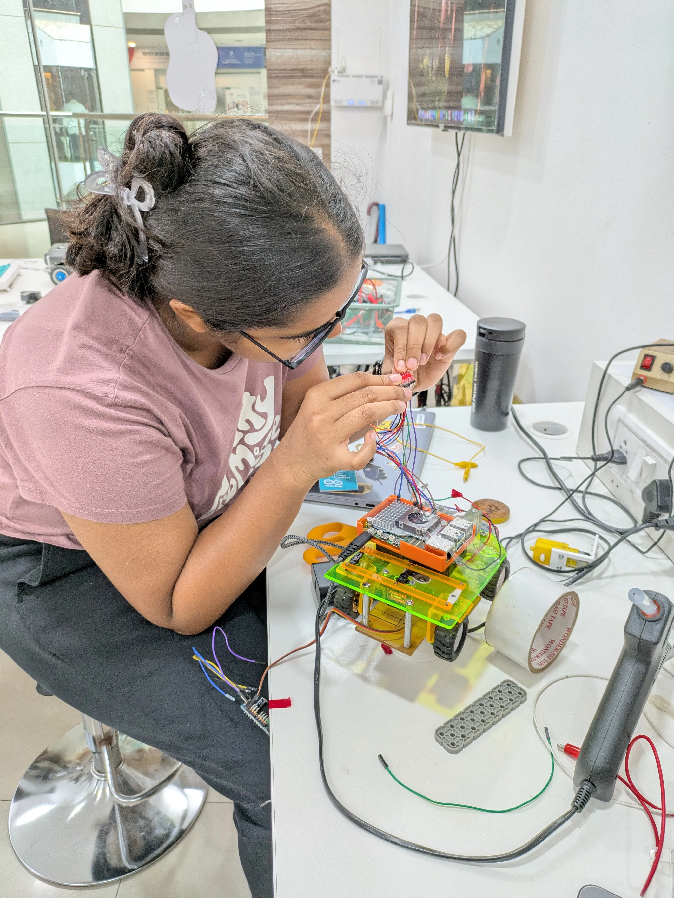
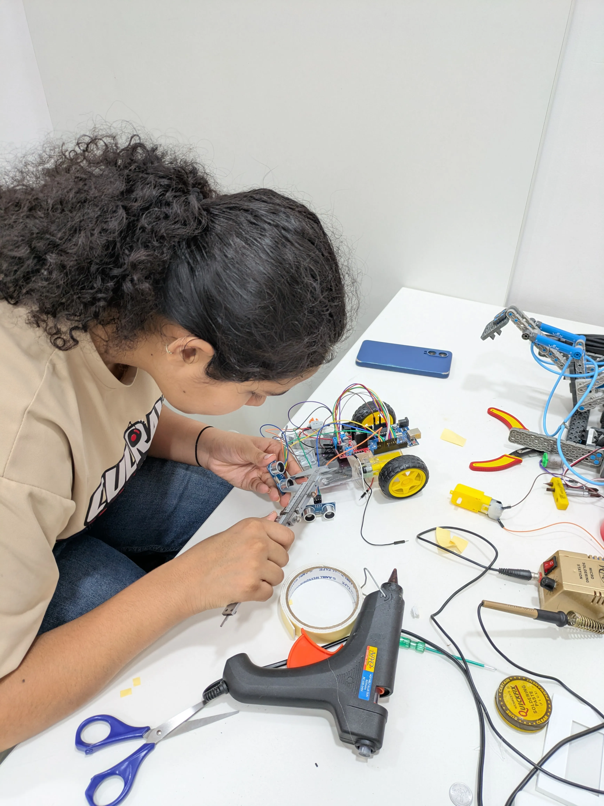
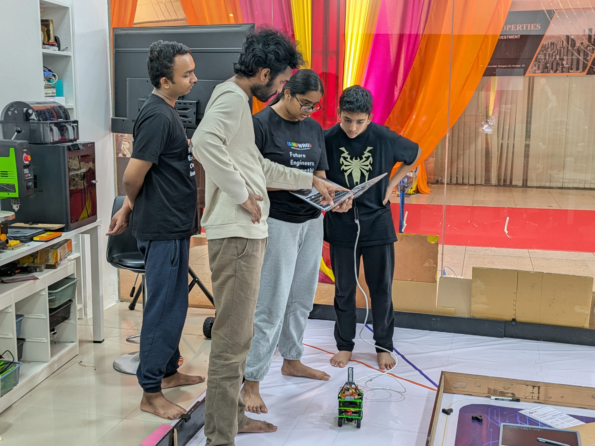
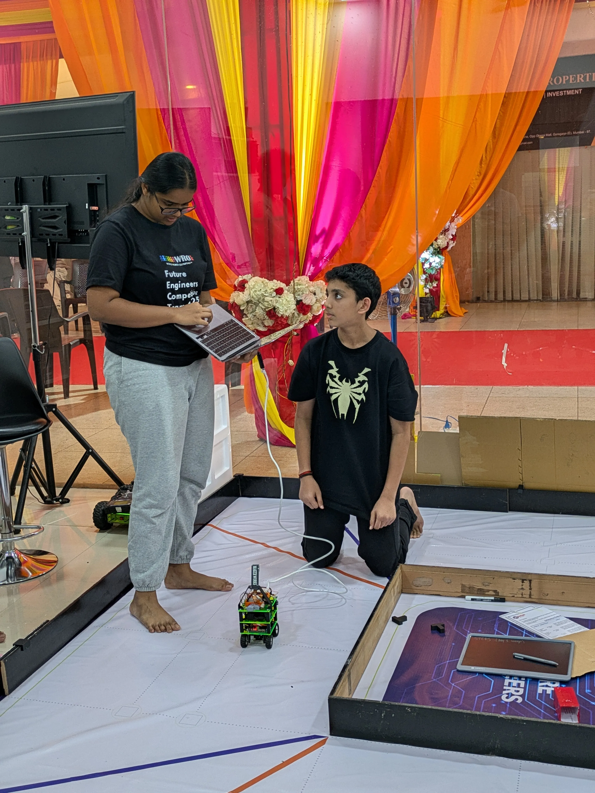
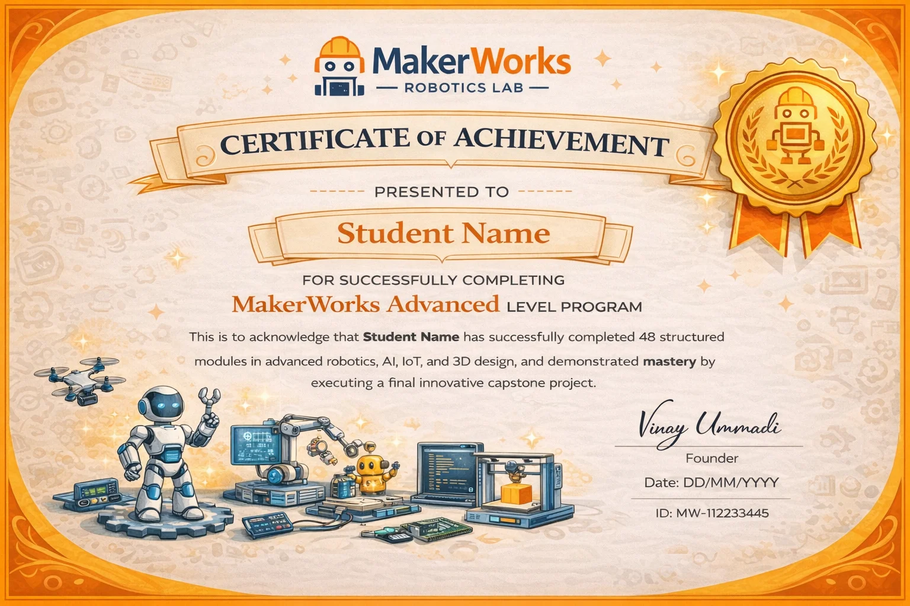

Life At Lab
Inside the Innovation Hub






A specialized 2-year leadership track for ages 15+ focused on Industrial ROS 2, Machine Learning, and Enterprise Prototyping.
Enroll Now15+ Years
2 Years Course
2 Sessions/Week
Industrial ROS 2, Embedded AI, and Professional Prototyping.
Teens and young adults aiming for top engineering universities.
For driven innovators who want to build real-world industrial systems.
Strong interest in coding; Intermediate level or prior experience recommended.
Edge Computing
Robot OS Mastery
Prototype Readiness
Training neural networks for computer vision and autonomous decision making.
The standard operating system for industrial and commercial robotics globally.
Complex PCB design, advanced kinematics, and multi-robot sync protocols.
Using Fusion 360 and simulations for stress-testing and industrial finishes.
Linux and ROS 2 middleware foundation for heavy-duty robotics.
Deploying AI computer vision models to edge-compute nodes.
Simulation-driven mechanical assembly for stress-tested products.
Final capstone launch & elite professional certification.
Awarded upon successful deployment of a ROS-based industrial prototype, ML integration, and independent technical documentation.
High-level mastery of Robot Operating Systems and DDS communication.
Experience in training, quantizing, and deploying custom CNN models.
Prepared for venture building, patent filing, and elite university STEM roles.





